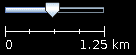

Chapter 4: Getting started with JOSM¶
Learning Objectives
Downloading JOSM
Installing JOSM
Adjusting settings in JOSM
Using basic tools (move and draw the objects)
Adding presets
We will now learn how to download and install JOSM step-by-step. JOSM is the Java OpenStreetMap editor, a full-feature desktop editor. When using iD Editor we always have be connected to the internet, while in JOSM we can use it offline or with an intermittent internet connection.
In this module, we will also change some JOSM settings that will help us in using JOSM. We will then open a sample map and learn some basic operations of this software. Recall in the introduction module, you were asked to draw a map of the city or region around the neighborhood where you live. We will draw it again in this module, but we will draw it digitally using JOSM. After learning this chapter, you will have a good comprehension of how to map using the JOSM editor.
4.1 Downloading JOSM¶
If you have a copy of the JOSM installation file on a CD or flashdisk, you can skip to the next session on JOSM installation. If you do not have the JOSM installation package or you want the newest version of JOSM, you can open your web browser (using Firefox, Chrome, Opera or Internet Explorer). In the address bar at the top of the window, enter the following text and press enter: josm.openstreetmap.de. You can also find JOSM site by searching for “JOSM” using your favorite search engine. The JOSM site will look much like the figure below:
JOSM site interface¶
Select the installation file according to your computer’s operating system. If you are using a computer with Windows Operating System, click Windows installer to download JOSM. If you have other operating systems, click on the link that corresponds to your computer’s operating system and download the installation package. In this module, we assume you are using Windows, but the instructions will be similar for other operating systems.
4.2 JOSM Installation¶
Once the JOSM installation package has downloaded, we will install onto our computer or laptop. Here are the steps for installing JOSM:
Find the JOSM installer file on your computer. Double-click it to begin setup.
Click OK, Next, I Agree, and Install. When the installation is complete, click Finish to lunch JOSM for the first time. Later, when you want to start JOSM, you can do so by clicking on the Start Menu in the lower left corner of your computer, and clicking the program JOSM.
When JOSM starts, it will look something like the image in the figure below:
JOSM home view¶
Note
- You may have problems when installing JOSM if Java is not installed on your computer. If you have
problems during the installation in this section, try to download and install Java. You can download here: www.java.com/en/download/
When the first time you open JOSM, you might see a window appears there ask to update the software. You do not need to update it because you just downloaded a new software. Cancel button. If you don’t want to see this message anymore, check a box below before clicking “Cancel”.
JOSM used in this module is the newest version from the site. The display version could possibly change if you are using another JOSM version.
4.3 JOSM Setup¶
4.3.1 Change Language¶
There are many settings that you can adjust in JOSM. One of settings you might want to adjust is the local JOSM language. JOSM has been localized with many language options, and you should choose the language that you want.
To access Preferences windows, click
Bring up the preferences menu in JOSM¶
On the left side, click icon that looks like a paint can and paintbrush.
At the top of the window, click the tab that says Look and Feel.
Choose your language in the dropdown box next to the word Language as shown in the figure below.
Change language in JOSM¶
4.3.2 Account and Proxy Settings¶
After changing the language we also need to enter the username and password of our OSM account in JOSM. This will be useful when we edit or add data on the OSM map, the server will recognize that the edits belong to a registered user. If you do not add your account information, you will not be able to upload data into OpenStreetMap. Here are the steps to add your account information:
Click icon that looks like a Globe at the left side of preferences box.
Then enter your OSM username and password as shown in the figure below.
Adding OSM username and password in JOSM¶
If your internet connection is using proxy, you can also enter the proxy on the proxy settings tab then simply enter the appropriate proxy for your internet network.
4.3.3 Adding Presets¶
By now you should have entered your account name. Next is to configure JOSM by adding menu presets. What are menu presets? Menu presets are small files added to JOSM that can pre-supply the attribute fields for mapping features, such as name and address for a building, or street name for a road. If you are still a bit confused about presets, follow along and you. To add menu presets, follow these steps:
Click the icon that looks like a grid:
Click the tab at the top that reads Tagging Presets.
Under Available Presets find and select the entry labelled Buildings Indonesia. Then click the blue arrow to the right of this box, as shown in the figure below.
Adding presets in JOSM¶
If you already have your own presets file on your computer, you can insert it directly:
Click + beside active presets box
Then click this icon below to find your presets file
When you locate the presets file, click Open then Ok.
4.3.4 Adding a Plugin¶
Now we will try to add a plugin in JOSM. A plugin is a tool that we can add it as an extension in JOSM to help us during editing. Here are the steps to add plugin in JOSM:
Click plugin icon that looks like picture below
Then click Download list to download all plugins that available in JOSM
In search box, type the name of the plugin, for example building_tools
Then check the box beside the plugin name as shown in the figure below:
Download plugin in JOSM¶
4.3.5 Activate Remote Control¶
Remote Control in JOSM needs to be set in order for other sites, such as the HOT Tasking Manager to access your OpenStreetMap account and enable editing. To activate the remote control function:
Click the icon depicted in the picture below
Then check on the box beside Enable remote control
Check any other box shown in the figure below according to your needs.
Activate remote control in JOSM¶
4.3.6 Adding Satellite Imagery¶
We will want to use satellite imagery as a background to identify features and trace them when making our map, so let’s add imagery from the Preference window.
Click on the icon that says WMS TMS like this:
Bing Satellite imagery is often the default choice, so click on Bing Sat. Then click Activate as shown in the figure below.
Satellite imagery layer list in JOSM¶
4.4 JOSM Interface¶
At this point, you’ve should have learned to customize and pre-configure the basic settings in JOSM, and now you’re ready to edit the map. In this chapter, we turn attention to the important parts of the JOSM editor and how to use them. The figure below shows the essential parts of the JOSM interface.
JOSM interface¶
The main window, as you have seen earlier, -is the map area, and where most of the editing activity takes place. Here you will view, interrogate, edit, and add data to OpenStreetMap.
To the right of the map area are stacked panels, each having a dedicated function. Usually when the first time you install JOSM, several panels that will be displayed with the default settings, such as Layers, Properties, and Selection. When you select a node, way, or polygon in map area, it’ll be displayed on Selection panel. Information about the object will be displayed on Properties panel, and username of the object author will be displayed on Author panel.
To the left of the map area is a vertical toolbar, each icon corresponds to an editing function (see ‘Tools’ in figure above). For example, there are buttons for editing such as Select object(s) tool and Draw nodes tool. Other tools depicted in the above example include icons for deleting an object, drawing a polygon, and creating a way that is parallel to the other ways.
4.5 Learn Basic Drawing in JOSM¶
Let’s start by opening up a sample OSM file which we will use to learn the basic ways to draw maps with JOSM. Note that this map is not real, in that it is not a real map of a real place, so we will not save it on OpenStreetMap.
Download the file here: bit.ly/osmsample
Open JOSM. Click the Open button in the upper left.
Find the file
sample.osmon your computer and open it. Your JOSM screen should look quite similar to the figure below:
Display of sample file in JOSM¶
4.5.1 Basic Operation¶
To move the map left or right, up or down, hold your right mouse button down, and move your mouse.
There are several ways to zoom in and zoom out of the map. If you have a mouse, you can use your scroll wheel to zoom in and out. If you are using a laptop and don’t have a mouse, you can zoom in and out using the scale bar in the upper left of the map window. Drag the bar left and right by holding your left mouse down and moving the bar left or right with your mouse.
Look at the sample map. There a few different types of objects here. For example, there is a river, a forest, some buildings, several roads, and a couple of shops. Select an object by clicking on it with your left mouse button. Click on each of these objects and note the information in the panels on the right.
4.5.2 Node, Ways, and Polygons¶
As you click different objects on the sample map, notice that there are three different types of objects on the map. There are nodes, ways, and polygons.
Points are a single location, represented by symbols. On this sample map, there are two points, a clothing shop and a market. The clothing shop is represented by a shirt symbol, and the market is represented by a shopping cart. If you can not see these features clearly, please zoom in to the map.
There are several ways on the map as well, which represent roads. If you look closely you will see that within the ways, there are nodes as well. These nodes don’t have any symbols or other information associated with them, but they define where the line is located and give it shape.
Lastly, there are numerous polygons on the sample map, representing different places - a forest, a river, and buildings. A polygon generally represents an area, like a field or a building. A polygon is exactly like a way - the only difference is that the way begins and ends at the same node. That is to say, they are closed.
Note
It’s easy to think about the map that contains three basic types of objects - points, lines, and polygons. OpenStreetMap contained in specific terms that you will learn as you progress. In OSM, a point called node, and lines are ways. Polygon called closed way because this is just a line that starts and ends at the same point.
You may notice that when you select an object, it will be highlighted in red and a list appears to the right of the map in a window called “Properties”. These are known as tags and are depicted in the figure below.. Tags are attributes of the selected point, line or polygon that identify and describe that feature. But for now, all you need to know is that this information helps describe whether our object is a forest, a river, a building, or something else. Think about drawing a map by hand, and how you are also drawing points, lines, and shapes. What other places are best represented by points? Lines? Shapes?
Information of object in JOSM Properties Panel¶
4.5.3 How to Change Object¶
Select the forest on the left side of the map. Be sure to click on the line around the forest, not one of the points on the line. Now hold your left mouse button down and drag your mouse. You should be able to move the forest to a new location on the map.
Click on one of the points on the line around the forest. Hold your left mouse button down and drag your mouse. You should be able to move the point. This is how you can change the shape of an object, or move a point.
4.5.4 Drawing an Object¶
On the left side of a JOSM is a column of buttons. Many of these buttons open new windows on the right side that provide more information about the map. The most important buttons, however, are at the top of these column. These buttons change the operations you do with your mouse.
Select button is one of the keys that you will use frequently. This button is useful for selecting objects and to draw new objects. The Select button looks like this:
Before you draw, you need to make sure that nothing is selected. Click in the black space on the map, where it is empty, to make sure nothing is selected.
Click on the second button, the Draw tool.
Find an empty area on the map, and double-click with your mouse. This will draw a single point.
To draw a line, single-click with your mouse. Move your mouse and click again. Continue until you are happy with your line. To end the line, double-click your mouse.
Draw a polygon the same way that you draw a line, but finish the polygon by double-clicking on the point where you started the line.
4.5.5 How to Add Presets¶
Now we know how to draw points, lines and shapes, but we still haven’t defined what they represent. We want to be able to say that our points are shops, schools, or something else, and whether our shapes are fields, buildings, or something else. To provide information on the objects that we create or edit we need to include presets in the object. Here are the steps:
Click on the Select tool, in the column of buttons on the left.
Select one of the objects that you drew with the Draw tool. On the top menu, click Presets. Move your mouse through the sub-menu to the type of location you would like to define.
Go to Preset menu. Click on item named Building, which has been added at the bottom of the menu as shown in the figure below.
Building presets box in JOSM¶
When you click on a preset, a form will pop up asking you for more information. You do not have to fill in every field, but you may wish to add some of the important fields, such as the name of the object.
When you are finished entering the information, click Apply Preset. If all goes as expected, your point, line, or shape should change colors or display a symbol. This is because you have defined what it is.
4.6 Draw Your Own Map¶
Now let’s draw a map in order to practice the techniques you have learned. You may wish to redraw the map that you drew on paper in previous module.
Drag the map away from the sample map. Hold the right mouse button and drag your mouse, until you have a nice empty area to draw on.
Use the Draw tool to create points, lines, and polygon. Describe what your objects are by selecting from the Presets menu.
When you are finished, you should have your own map, similar to the sample map that we opened in sample.osm.
Summary¶
At this point, you should have learned how to setup JOSM on your computer and how to use basic editing tools available in JOSM. In the next module, we will take a closer look into the process of editing OpenStreetMap using the JOSM editor.